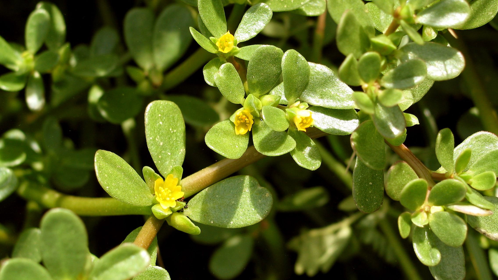

Cao Văn A
ĐÔI LỜI TỰ BẠCH
Tôi là người nắm giữ bài thuốc trị bệnh viêm họng hạt dứt điểm. Một lần tình cờ tôi đã học được bài thuốc nam trị bệnh viêm họng hạt từ người bạn dân tộc thiểu số, và qua hơn mười năm vận dụng, tôi đã giúp được mấy trăm người thoát khỏi căn bệnh quái ác này. Nay tôi mang bài thuốc lên Google không ngoài mục đích nhân rộng hơn nữa cơ hội khỏi bệnh cho mọi người. Một lần nữa cảm ơn bác Google và mọi người đã ủng hộ, đồng hành cùng tôi.
MENU
LIÊN HỆ
| Cao Văn A | ||
| Phú Thuận, Hòa Mỹ Đông, Tây Hòa, Phú Yên, Việt Nam. | ||
| Email: | caovana@gmail.com | |
| Điện thoại: | 0128 942 6012 | Gọi |
| ĐT cố định: | 0573 581 318 | Gọi |
| Cô Nhung: | 0164 211 9759 | Gọi |
THÔNG TIN TÀI KHOẢN
| Chủ tài khoản: | Đỗ Thị Ngọc Nhung |
| Số tài khoản: | 4610 215 002 037 |
| Ngân hàng: | Agribank |
| Chi nhánh Tây hòa - Phú yên. |
BÀI VIẾT NỔI BẬT


Rau sam, loài cỏ dại chứa nhiều vitamin và chất chống ung thư
Một loại rau, được xem là một loài cỏ dại phổ biến mà rất có thể ngay lúc này đang lớn lên trong khu vườn của bạn. như một vị khách không mời. Loài cây này xuất xứ từ Ấn Độ và Ba Tư, và lan ra toàn thế giới. Một số nơi người ta nhổ nó và ném đi cùng với các loại cỏ dại khác, trong khi những người khác thì chăm sóc nó và ăn nó như thức ăn. Chỉ là một loài cỏ dại hấp dẫn xinh đẹp với lá dày, mọng nước và hoa thường màu vàng, nhưng lợi ích sức khỏe còn vượt xa những gì bạn mong đợi.
Hạt giống có thể nảy mầm trong nhiều loại khí hậu.
Hạt giống của loài này rất mạnh mẽ, chúng có thể tồn tại trong đất đến 40 năm, nó mọc trong một khu vườn được chăm sóc tốt hay nơi khí hậu khô cằn đều tốt cả. Loài cây dẻo dai này tạo ra một lợi ích tương tự cho hệ miễn dịch và sức khỏe của chúng ta.
Ẩm thực
Tuy được gọi là rau nhưng thường thì người ta chỉ coi nó như là cỏ dại, chỉ dùng nó như là một loại rau ăn lá rất hạn chế. Nó có vị hơi chua và mặn. Nó có thể dùng tươi trong món rau sống hay salad hoặc luộc, nấu tương tự như rau bi na. Do các chất nhầy mà nó chứa nên nó cũng được coi là thích hợp cho một số món súp hay thịt hầm. Thổ dân Australia dùng hạt của nó làm một loại bánh mì.
Ở nước ngoài người ta gọi là cỏ heo – còn nước ta thường gọi là rau sam. Một loại rau có axit béo có lợi Omega 3 hơn so với các loại dầu cá! Loài cỏ dại này cũng là một trong những loại rau có mức vitamin A cao nhất trong số tất cả các loại rau xanh (1320 IU / 100 g, cung cấp 44% RDA). Thực phẩm Vitamin A cao có thể giúp bảo vệ chúng ta khỏi nhiều loại bệnh ung thư và giúp tăng cường sức khỏe mắt.
Chống Oxi-hóa mạnh
Hơn nữa, đây còn là loại rau có đầy đủ hai loại sắc tố alkaloid betalain khác nhau – một beta-cyanis màu đỏ và một beta-xanthins màu vàng, đó là chất chống oxy hóa mạnh như nhau và chống gây đột biến, hay chính là chống ung thư. Trong rau sam còn chứa các loại vitamin C, và B-complex bao gồm riboflavin, pyridoxine, và niacin, cũng như carotenoids, và các khoáng chất như sắt, magiê và canxi.
Lịch sử
Loài rau này từng được sử dụng rộng rãi tại Hy Lạp, nên các phát hiện cổ thực vật học là khá phổ biến tại nhiều khu vực tiền sử của quốc gia này. Trong ngữ cảnh lịch sử, các hạt thu được từ các lớp đất đá cổ tại Kastanas, cũng như tại khu vực Heraion, Samos có niên đại vào khoảng thế kỷ 7 TCN. Theophrastus (nhà hiền triến – nhà khoa học nổi tiếng thời cổ đại) đã đặt tên cho rau sam vào thế kỷ 4 TCN là andrákhne, và coi nó là một trong các loại rau cỏ mùa hè cần gieo hạt vào tháng Tư.
Trong y học truyền thống Hy Lạp, rau sam được dùng để điều trị táo bón và viêm nhiễm hệ bài tiết. Trong thời kỳ cổ đại, các tính chất chữa bệnh của nó được cho là đáng tin cậy đến mức Pliny (nhà triết học - tự nhiên học La Mã) đã khuyên rằng nên đeo rau sam làm bùa hộ mệnh để xua đuổi ma quỷ.
Với tất cả những lợi ích dinh dưỡng của loài rau này, và một lượng tiền lớn chúng ta chi tiêu cho việc chăm sóc sức khỏe, có vẻ như rau sam cần được nâng cao so với tình trạng cỏ dại, nó cần trở thành thực phẩm hàng ngày. Một loại rau ẩn chứa một cú đấm dinh dưỡng mạnh mẽ, chắc chắn.
Hạt giống có thể nảy mầm trong nhiều loại khí hậu.
Hạt giống của loài này rất mạnh mẽ, chúng có thể tồn tại trong đất đến 40 năm, nó mọc trong một khu vườn được chăm sóc tốt hay nơi khí hậu khô cằn đều tốt cả. Loài cây dẻo dai này tạo ra một lợi ích tương tự cho hệ miễn dịch và sức khỏe của chúng ta.
Ẩm thực
Tuy được gọi là rau nhưng thường thì người ta chỉ coi nó như là cỏ dại, chỉ dùng nó như là một loại rau ăn lá rất hạn chế. Nó có vị hơi chua và mặn. Nó có thể dùng tươi trong món rau sống hay salad hoặc luộc, nấu tương tự như rau bi na. Do các chất nhầy mà nó chứa nên nó cũng được coi là thích hợp cho một số món súp hay thịt hầm. Thổ dân Australia dùng hạt của nó làm một loại bánh mì.
Ở nước ngoài người ta gọi là cỏ heo – còn nước ta thường gọi là rau sam. Một loại rau có axit béo có lợi Omega 3 hơn so với các loại dầu cá! Loài cỏ dại này cũng là một trong những loại rau có mức vitamin A cao nhất trong số tất cả các loại rau xanh (1320 IU / 100 g, cung cấp 44% RDA). Thực phẩm Vitamin A cao có thể giúp bảo vệ chúng ta khỏi nhiều loại bệnh ung thư và giúp tăng cường sức khỏe mắt.
Chống Oxi-hóa mạnh
Hơn nữa, đây còn là loại rau có đầy đủ hai loại sắc tố alkaloid betalain khác nhau – một beta-cyanis màu đỏ và một beta-xanthins màu vàng, đó là chất chống oxy hóa mạnh như nhau và chống gây đột biến, hay chính là chống ung thư. Trong rau sam còn chứa các loại vitamin C, và B-complex bao gồm riboflavin, pyridoxine, và niacin, cũng như carotenoids, và các khoáng chất như sắt, magiê và canxi.
Lịch sử
Loài rau này từng được sử dụng rộng rãi tại Hy Lạp, nên các phát hiện cổ thực vật học là khá phổ biến tại nhiều khu vực tiền sử của quốc gia này. Trong ngữ cảnh lịch sử, các hạt thu được từ các lớp đất đá cổ tại Kastanas, cũng như tại khu vực Heraion, Samos có niên đại vào khoảng thế kỷ 7 TCN. Theophrastus (nhà hiền triến – nhà khoa học nổi tiếng thời cổ đại) đã đặt tên cho rau sam vào thế kỷ 4 TCN là andrákhne, và coi nó là một trong các loại rau cỏ mùa hè cần gieo hạt vào tháng Tư.
Trong y học truyền thống Hy Lạp, rau sam được dùng để điều trị táo bón và viêm nhiễm hệ bài tiết. Trong thời kỳ cổ đại, các tính chất chữa bệnh của nó được cho là đáng tin cậy đến mức Pliny (nhà triết học - tự nhiên học La Mã) đã khuyên rằng nên đeo rau sam làm bùa hộ mệnh để xua đuổi ma quỷ.
Với tất cả những lợi ích dinh dưỡng của loài rau này, và một lượng tiền lớn chúng ta chi tiêu cho việc chăm sóc sức khỏe, có vẻ như rau sam cần được nâng cao so với tình trạng cỏ dại, nó cần trở thành thực phẩm hàng ngày. Một loại rau ẩn chứa một cú đấm dinh dưỡng mạnh mẽ, chắc chắn.